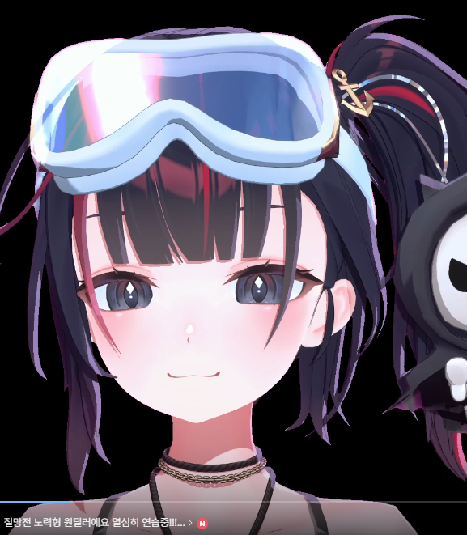
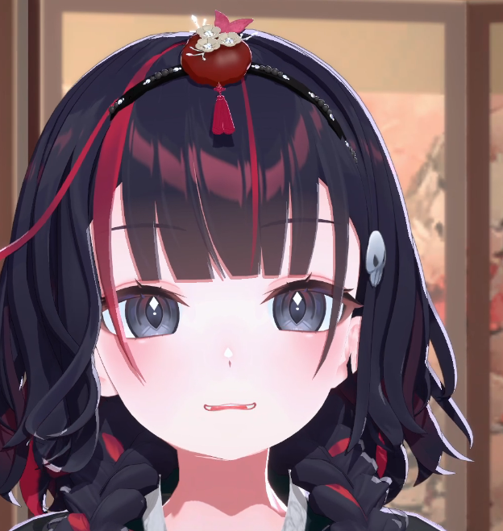

루체리 답장 남겨놓은 거 봤어 ㅋㅋㅋㅋ
아니 근데 뿡뿡뿡뿡뿡에 뭘 그렇게 기대한 거야 💀
미안하지만 정말 아무 의미 없었습니다.
...적어도 그때까진.
루체리가 그걸 발견해버린 덕분에 이제는 의미가 생겨버렸잖아 ㅋㅋㅋ
다음에 또 몰래 들어왔다가 저거 발견하면 성공이다.
지정된 시간까지 골드3 승급.
실패 시 09.25 · 24시간 노방종 예정 💀
좋은 팀원들을 만난 판도 있었지만, 그것만으로 올라간 건 아니라고 생각해.
계속 열심히 했고 잘한 판도 많았고, 결국 루체리가 자기 몫을 해냈으니까 골드3까지 올라간 거잖아.
그래서 마지막에 진짜 증명해냈을 때는 나도 괜히 기분 좋더라.
 증명의 날 — 증명 완료. 🍓♥️
증명의 날 — 증명 완료. 🍓♥️아닙니다.
축하드립니다 루체리. 💀ㅋㅋㅋㅋ

한복 루체리 예쁘더라.
증명 끝내고 다음 날 갑자기 저렇게 나타나는 건 뭐야 ㅋㅋㅋㅋ


그리고 절망전에도 뽑혔고.
원래도 원딜인 루체리가 이번에는 절망전이라는 목표까지 생겼으니까 한동안 롤 하는 모습 많이 보게 되겠네.
연습하면서 잘 풀리는 날도 있고 안 풀리는 날도 있겠지만, 결과만 보는 것보다 그렇게 맞춰가고 연습하는 과정 보는 것도 나는 좋아해.
그러니까 너무 부담 갖지는 말고 열심히 해봐.
원딜 루체리 응원하고 있을게 🍓
근데 방송 얘기하다가 잠깐 딴 데로 샜네 ㅋㅋㅋ
원래 이거 루체리가 남긴 답장에 대한 답장이었는데.
내가 친해지면 말 많아지고 장난도 많아진다고 한 거, 루체리도 비슷하다고 하니까 왠지 이해되는 게 있더라.
나도 요즘 방송 보면서 처음보다 진짜 많이 편해졌다는 생각이 들거든. 처음에는 그냥 보고 웃는 쪽이었다면 요즘은 나도 같이 장난치고 싶고, 이것저것 말해주고 싶고 ㅋㅋㅋ
루체리가 말한 것처럼 서로 조금씩 알아가는 중인가 봐 ♥️
나도 계속 보러 갈게.
방송에서 새로운 모습도 보고,
이렇게 서로 모르는 것도 하나씩 알아가고.
그러니까 나도 계속 루체리 하나씩 알아갈 테니까
루체리도 계속 나 하나씩 알아가 봐 🍓♥️
오늘 새롭게 알게 된 것
루체리는 뿡뿡뿡뿡뿡에 생각보다 많은 것을 기대하고 있었다.
💀
오늘도 새로운 것을 알게 되었네요.